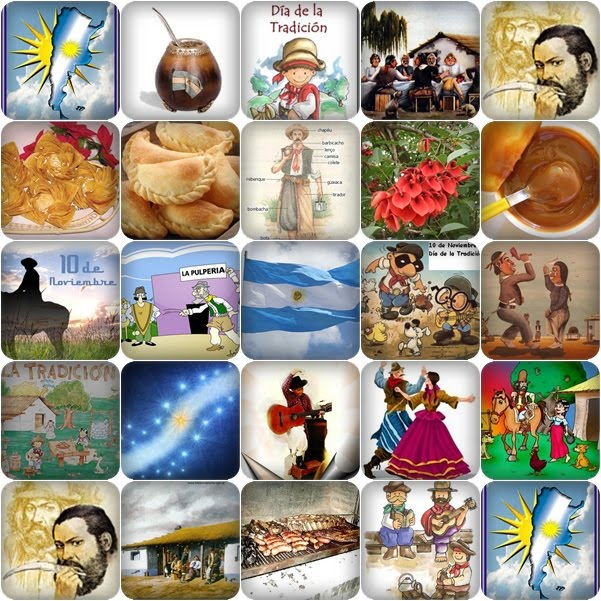
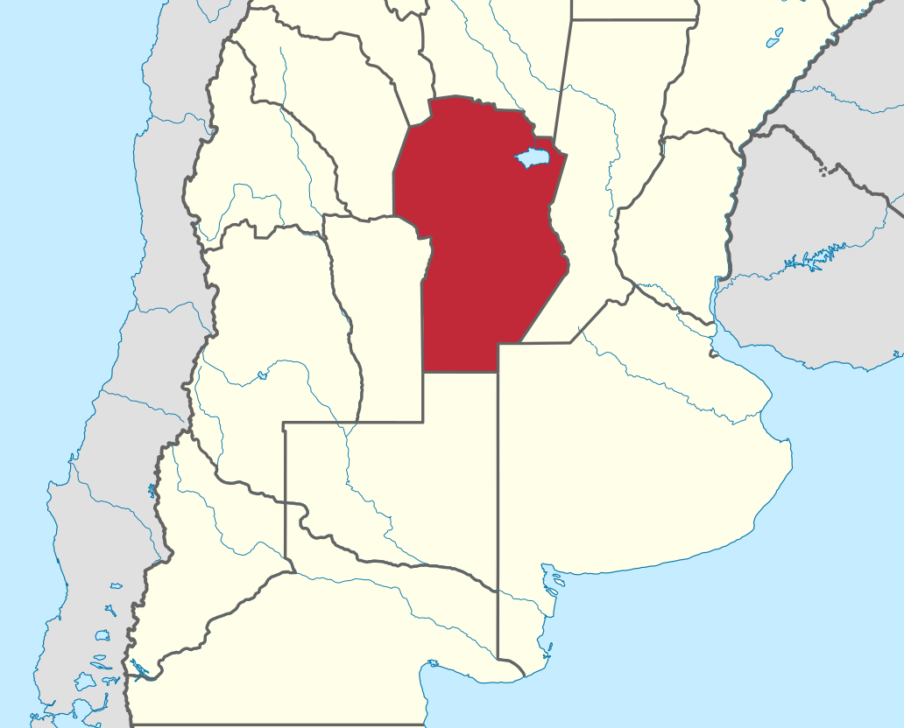
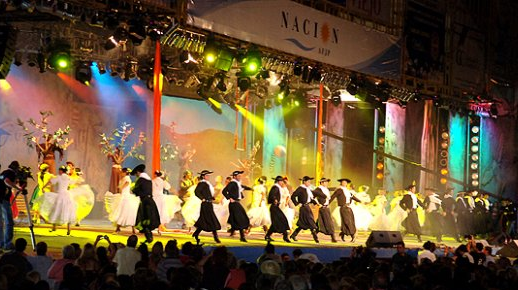

|  | El Día de la Tradición se celebra en Argentina el 10 de noviembre, fecha que fue elegida en conmemoración del nacimiento del poeta argentino José Hernández (1834 - 1886), que escribió, entre otros, el poema narrativo El gaucho Martín Fierro, La vuelta de Martín Fierro, relatos en forma de verso de la experiencia de un gaucho, su estilo de vida, sus costumbres, su lengua y códigos de honor. |
| Córdoba | |||
|  | Ubicada en el centro geográfico de la República Argentina, la Provincia de Córdoba cubre el 4% del territorio nacional. Está entre las últimas prolongaciones de la llanura y los comienzos de la serranía. Equidiistante entre el Océano Pacífico y el Atlántico. |
||
 |
Se destacan las tradiciones locales y maneras de vivir de las distintas localidades con sus fiestas patronales y festivales, como el Festival Nacional de Folklore de Cosquín, el Festival de la Doma y el Folklore de Jesús María, La Fiesta de la Cerveza de Villa General Belgrano y el Festival de Teatro de Córdoba entre otros. |
||